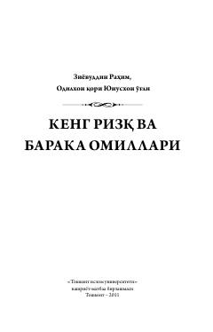

KRRizqning mohiyati va unga baraka keltiruvchi omillar haqida islomiy qo'llanma.
Ushbu kitob islomiy nuqtai nazardan rizq tushunchasi, uning ko'payishi va kamayishiga sabab bo'ladigan omillar haqida so'z yuritadi. Mualliflar rizqning faqat moddiy emas, balki ma'naviy jihatlarini ham tahlil qilib, baraka topish yo'llarini ko'rsatib berishgan.